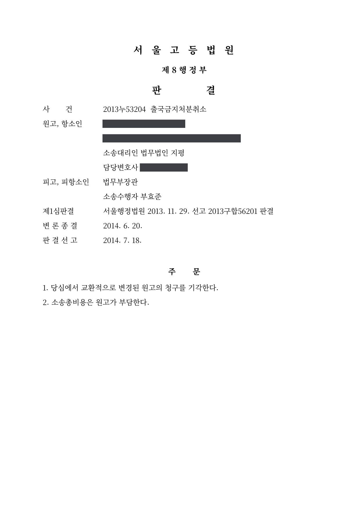

고액 체납자 출국금지 기간연장처분 취소소송 (1·2심)
서울행정법원 2013구합56201 · 서울고등법원 2013누53204 · 담당변호사 부효준
판결문


사건의 요지
15억 원대 국세를 체납하고 명단이 공개된 사람에 대한 출국금지 기간연장처분에 관하여, 조세채권 확보의 필요성과 출국금지 요건의 충족 여부가 다투어진 사건입니다. 항소심에서 교환적으로 변경된 청구도 받아들여지지 않았습니다.
사건의 주요 내용
원고는 1998년부터 2000년 사이 여러 부동산을 양도하면서 발생한 양도소득세와 종합소득세·부가가치세 등 합계 약 15억 1,000만 원의 국세를 2000년과 2001년의 납부기한 이후 장기간 체납하고 있었습니다. 과세관청은 원고가 자진납부 실적이 거의 없고, 가족이 국외로 이주한 상태이며, 고액·상습체납자로 명단까지 공개된 사람으로서 체납처분을 회피할 우려가 있다고 보아 구 국세징수법 제7조의4에 따라 출국금지를 요청하였고, 처분청은 2011년 10월 6개월의 출국금지처분을 하였습니다.
처분청은 그 뒤 출국금지기간을 반복하여 연장하였고, 원고는 2013년 10월의 연장처분(2013년 10월부터 2014년 4월까지)의 취소를 구하는 소송을 제기하였습니다. 1심에서 청구가 받아들여지지 않은 뒤 항소심 진행 중에 다시 2014년 4월 연장처분(2014년 4월부터 2014년 10월까지)이 이루어지자, 원고는 항소심에서 청구취지를 새 연장처분의 취소로 교환적으로 변경하였습니다. 부효준 변호사는 1심과 항소심에서 처분청의 소송수행자로서 이 사건을 수행하였습니다.
쟁점
- 장기간 고액의 국세를 체납하면서 자진납부 실적이 없는 사람에게 재산의 해외 도피 우려가 인정되는지
- 회사 부채 변제를 위하여 개인 재산을 처분하는 과정에서 생긴 체납에 정당한 사유가 있다고 볼 수 있는지
- 항소심에서 기간이 만료된 연장처분 대신 새로운 연장처분의 취소로 청구를 교환적으로 변경한 경우 어떻게 판단되는지
원고의 주장
- 1990년대 후반 외환위기로 운영하던 회사가 어려워져 개인 재산을 처분하여 회사의 부채를 변제하는 과정에서 국세를 체납하게 된 것이고, 현재는 별다른 소득이 없으며 해외로 빼돌릴 재산도 없다.
- 사업을 그만둔 뒤에는 예술 활동에 전념하여 사회적 지위를 얻었으므로 이를 버리고 해외로 도피할 가능성이 거의 없고, 몇 차례의 해외 출국은 가족 방문·예술 활동·건강관리를 위한 것으로 경비도 가족의 도움으로 마련하였다.
- 그동안 6억 4천만 원 이상의 국세를 납부하는 등 형편이 닿는 대로 성실히 납부하려 노력하였으므로, 재산의 해외 도피 가능성을 고려하지 않은 이 처분은 출국금지 요건을 갖추지 못하였고 가혹한 희생을 강요하는 것으로 재량권을 일탈·남용한 것이다.
부효준 변호사의 주장
- 원고의 체납세액은 출국금지 기준인 5천만 원을 훨씬 초과하는 15억 원에 이르고, 자신이 운영하던 회사의 채무를 변제하느라 세금을 내지 못하였다는 사정은 체납의 정당한 사유가 될 수 없으며, 원고가 제출한 자료에 의하더라도 2001년 이후 체납세액을 자진납부한 사실이 전혀 없다고 반박하였습니다.
- 원고는 해외에 거주하는 가족 명의의 고가 아파트에 무상으로 거주하면서 매년 수차례 해외를 오가는 등 상당한 수준의 생활을 유지하고 있어 재산이 없다는 주장을 믿기 어렵고, 실제로 과세관청이 2009년 원고 소유 토지를 공매하여 약 1억 2,000만 원을 징수한 바 있으며, 가족이 해외에 거주하고 있어 해외 이주나 자금 유출이 상대적으로 쉽다고 주장하였습니다.
- 항소심에서는 원고가 2000년 자신이 소유하던 대형 업무용 건물을 가족에게 증여하였고 가족이 현재 그 건물로 임대업을 하고 있다는 점을 추가로 밝혀, 증여한 재산의 규모와 이용 현황도 해외 도피 우려 판단에 고려되어야 한다고 주장하였습니다.
법원의 판단
1심 법원은 대법원 2001. 7. 27. 선고 2001두3365 판결의 법리를 전제로, 체납세액이 15억 원에 이르는 고액인 점, 회사 채무 변제 때문에 세금을 내지 못하였다는 사정은 정당한 사유가 되기 어려운 점, 원고가 제출한 자료에 의하더라도 2001년 이후 자진납부 사실이 전혀 없는 점을 먼저 들었습니다.
이어서 해외에 거주하는 가족 명의의 고급 아파트에 무상으로 거주하면서 매년 수차례 해외를 오가는 등 상당한 수준의 생활을 지속한 점, 재산이 없다는 주장은 종래의 자산상태와 생활 정도에 비추어 믿기 어렵고 과세관청이 2009년 토지를 공매하여 일부 체납세액에 충당한 점, 가족이 해외에 거주하여 이주나 자금 유출이 상대적으로 쉬운 점을 들어, 고액의 국세를 체납한 원고가 출국의 기회를 이용하여 은닉한 재산을 국외로 도피시킬 우려를 인정하고 청구를 받아들이지 않았습니다.
항소심(서울고등법원 2013누53204)은 교환적으로 변경된 2014년 4월 연장처분에 관하여 1심 판결 이유를 인용하면서, 원고가 2000년 자신이 소유하던 지하 3층·지상 10층 규모의 건물을 가족에게 증여하여 현재 가족이 공동으로 소유하며 임대업을 하고 있다는 사실을 추가로 인정하고, '원고가 가족에게 증여한 재산의 규모와 현재의 이용현황'을 해외 도피 우려의 근거에 더하여 변경된 청구를 받아들이지 않았습니다.
출입국관리법 제4조 제1항 제4호, 동 시행령 제1조의3 제2항, 동 시행규칙 제6조, 제6조의5, 제6조의6 등 관계 법령의 취지를 종합하면, 5천만 원 이상의 국세 체납을 이유로 한 출국금지는 그 국세 체납자가 출국을 이용하여 재산을 해외로 도피하는 등 강제집행을 곤란하게 하는 것을 방지함에 주된 목적이 있는 것이지, 단순히 출국을 기화로 해외로 도피하거나 외국에 장기 체재하여 시효기간을 넘기는 것을 방지하는 등 신병을 확보하기 위한 것이 아니므로, 재산의 해외도피 우려 유무를 확인하지 아니한 채 단순히 일정 금액 이상의 국세 체납 사실 자체만으로 바로 출국금지처분을 하는 것은 출입국관리법 시행규칙 제6조 및 과잉금지의 원칙에 반하여 허용할 수 없다고 할 것이고, 재산의 해외도피 가능성 유무에 관한 판단을 할 때에도 재량범위를 일탈하거나 재량권을 남용하여서는 아니 됨은 물론이다.
서울행정법원 2013구합56201 판결 이유 '2. 라. 판단 1)' 앞부분
이때 재산의 해외도피 우려 유무는 국세 체납의 경위, 국세 체납자의 성별․나이․학력․직업․성행이나 사회적 신분, 경제적 활동과 그로 인한 수입의 정도․재산상태와 그동안의 국세 납부의 방법이나 수액의 정도, 국세 징수처분의 집행과정과 그 실효성 유무, 그동안의 출국 여부와 그 목적․기간․행선지․해외에서의 활동 내용․소요 자금의 수액과 출처 등은 물론 가족관계나 가족의 생활 정도․재산상태․직업․경제활동 등을 종합하여 판단하여야 한다(대법원 2001. 7. 27. 선고 2001두3365 판결 참조).
서울행정법원 2013구합56201 판결 이유 '2. 라. 판단 1)' 뒷부분
※ 판결 이유 가운데 이 사건의 판단 기준이 된 부분을 그대로 옮긴 것으로, 당사자 이름 등은 가렸습니다.
이 사건이 보여 주는 것
체납액이 큰데도 오랜 기간 자진납부가 전혀 없고, 본인 명의 재산은 없다면서 가족 명의의 고가 주택에 거주하며 해외를 자주 오가는 생활을 유지한다면, 법원은 재산을 은닉하고 있을 가능성과 해외 도피 우려를 인정하기 쉽습니다. 특히 체납 전후에 고액의 부동산을 가족에게 증여한 이력은 항소심에서 주요 근거로 추가되었습니다.
또한 출국금지 연장처분은 6개월마다 새로 이루어지므로, 소송 중에 다투던 처분의 기간이 끝나면 이 사건처럼 항소심에서 새 연장처분으로 청구취지를 교환적으로 변경하여 다툴 수 있습니다. 다만 사정변경이 없는 한 판단의 결론은 달라지지 않는다는 점도 이 사건이 보여 줍니다.
관련 법령출입국관리법 제4조 제1항 제4호, 제4조 제3항, 제4조의2 · 출입국관리법 시행령 제1조의3 제2항, 제2조, 제2조의2 · 출입국관리법 시행규칙 제6조, 제6조의5, 제6조의6 · 구 국세징수법 제7조의4 · 구 국세징수법 시행령 제10조의5 · 행정소송법 제8조 제2항, 민사소송법 제420조
관련 단어출국금지기간 연장처분고액·상습체납자명단공개양도소득세 체납재산의 해외 도피 우려가족 명의 아파트부동산 증여청구취지 교환적 변경출입국관리법 제4조 제1항 제4호항소심처분 적법
이 사건의 소개 글은 인스타그램(@lawyer.boo)에도 있습니다.
비슷한 처분을 받으셨다면
행정처분은 처분이 있음을 안 날부터 90일 이내에 행정심판이나 취소소송으로 다투어야 하고, 기간이 지나면 돌이킬 수 없는 처분은 집행정지를 서둘러야 합니다. 처분서를 받은 날짜부터 확인해 드립니다.